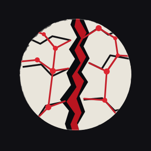
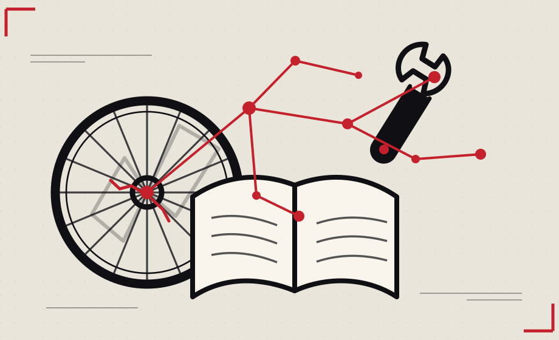

Savoirs · Communs · Réseaux
UN ESPACE EN CONSTRUCTION
Des idées publiques.
Des personnes protégées.
Un besoin, une ressource, une envie de faire ensemble ? Interstice relie les idées, pas les identités.
Les savoirs en action
Réparer. Apprendre. Construire ensemble.
Des outils, des connaissances et des initiatives qui se rencontrent. Pour passer de l’idée à la pratique, à plusieurs.
Explorer les ressources
Et si on essayait autre chose ?
La Faille Noire est une proposition libertaire, solidaire et autogérée. Pas une organisation déjà constituée. Un point de départ pour compléter ce qui existe et construire ce qui manque.
NOTRE MANIFESTE · V2.5 CONSOLIDÉE
Neuf principes. Huit piliers pour construire ensemble.
Liberté, égalité, solidarité, autogestion, entraide, culture et savoirs libres. Un texte de départ, pas une doctrine imposée : il est ouvert à la discussion et à la révision collectives.
Version éditoriale du 29 octobre 2026 · Non adoptée collectivementRESSOURCES PARTAGÉES
La bibliothèque des communs
Des ressources pour comprendre, faire, s’organiser et s’entraider. Vingt premières références avec leurs sources et indications de réutilisation.
HABITER AUTREMENT
Squats et lieux autonomes
Histoire, archives, pratiques collectives et informations juridiques pour comprendre le mouvement squat.
ESPACE PUBLIC
Les propositions
Les propositions approuvées sont consultables sans compte. Chaque envoi est examiné avant publication.
Chargement des propositions publiques…
Voir un exemple fictif
EXEMPLE FICTIF · NON PUBLIÉ
Un atelier partagé de réparation de vélos
Mettre en commun quelques outils et organiser des ateliers ouverts pour apprendre à réparer ensemble.
Catégorie : savoir-faire · Secteur : non précisé · Auteur : anonymeLes propositions ne sont publiées qu’après validation humaine.
PROTOTYPE V0.5
Préparer une proposition
Ce formulaire transmet ta proposition à une file de validation privée. Rien n'est publié automatiquement. N'envoie aucune information personnelle.
Construire ensemble
Interstice est lui-même une proposition ouverte. Ses règles, son fonctionnement et ses outils pourront être discutés et modifiés collectivement.
Notre engagement
Rendre visibles les idées, jamais exposer les personnes. Pas de publicité, pas de profilage, pas de compte nécessaire pour consulter. L'hébergeur peut toutefois traiter certaines données techniques nécessaires à la diffusion du site.